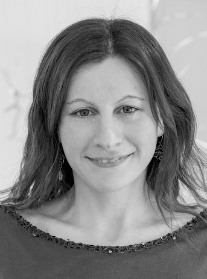
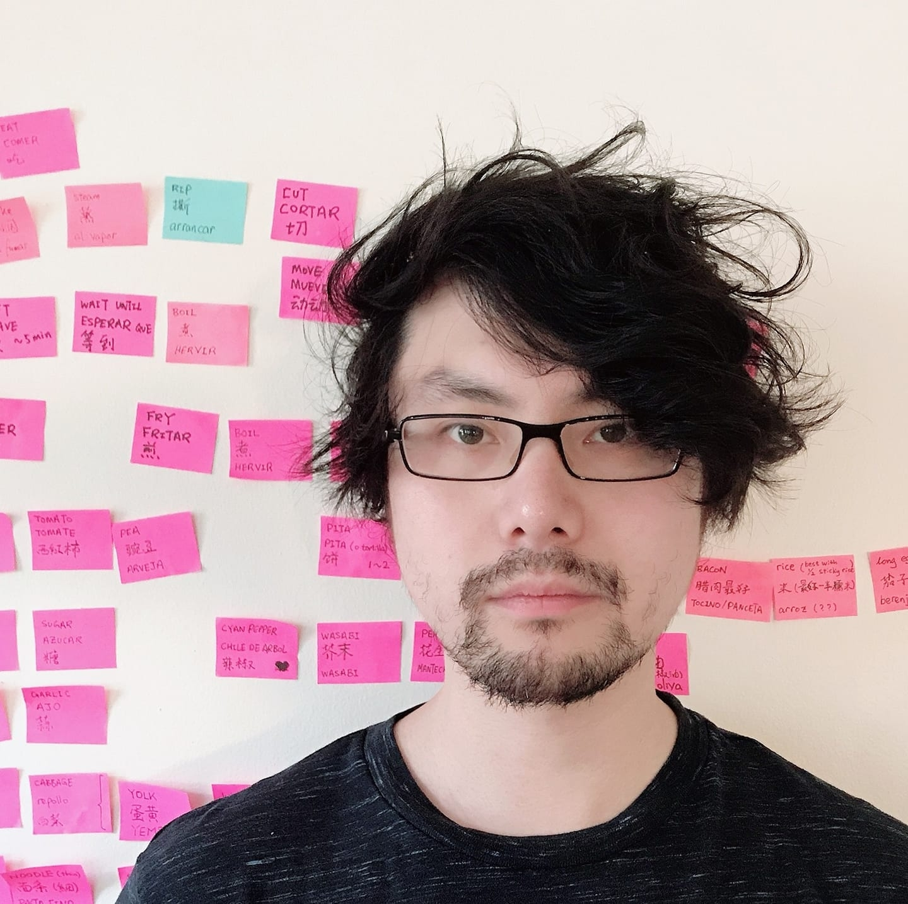
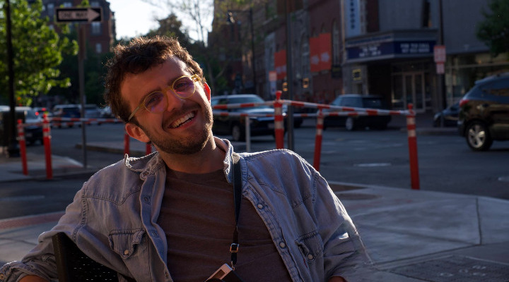
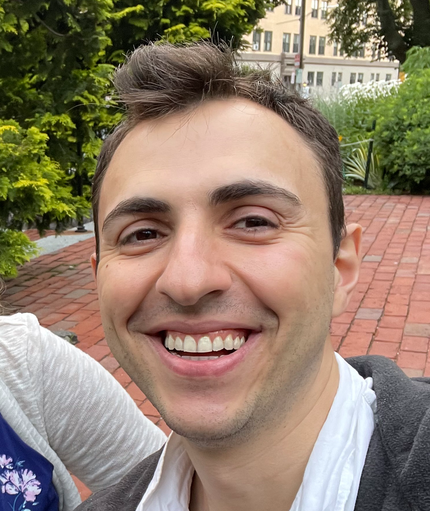
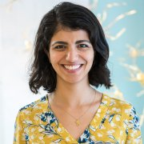

Organisers

Assistant Professor, Dalhousie University, Canada

Assistant Professor, Nanyang Technological University, Singapore

Postdoctoral Researcher, Sorbonne & Inria, France

Incoming Assistant Professor, Boston College (Harvard)

Professor, University of Edinburgh & University of Amsterdam
Advisory Committee
Pierre-Yves Oudeyer
Inria, University of Bordeaux

Leyla Isik
Johns Hopkins University